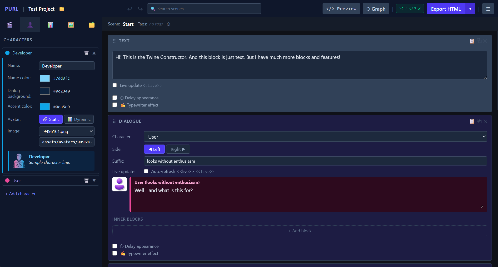

No-code редактор для створення інтерактивних історій на SugarCube 2
No-code editor for building interactive fiction with SugarCube 2

Purl — це десктопний застосунок для Windows, який дозволяє створювати інтерактивні текстові ігри та візуальні новели у форматі SugarCube 2 без написання коду. Ви будуєте історію з візуальних блоків, а Purl генерує готовий .twee файл для Tweego або Twine.
Purl is a Windows desktop app that lets you create interactive fiction and visual novels in SugarCube 2 format without writing code. Build your story from visual blocks, and Purl generates a ready-to-use .twee file for Tweego or Twine.
Додавайте та впорядковуйте блоки перетягуванням. Кожна сцена — окремий список блоків.
Add and reorder blocks by drag & drop. Each scene is a separate list of blocks.
Блоки діалогів з персонажами, кольорами та аватарами. Ефекти друкарської машинки та затримки.
Dialogue blocks with characters, colors and avatars. Typewriter and delay effects.
Блоки вибору, кнопки, посилання та умовні гілки з підтримкою вкладених блоків.
Choice blocks, buttons, links and conditional branches with nested block support.
Числа, рядки, булеві, масиви. Вирази, маппінг, режими random та dynamic.
Numbers, strings, booleans, arrays. Expressions, mapping, random and dynamic modes.
Блоки зображень і відео. Статичний або динамічний режим прив'язки до змінної.
Image and video blocks. Static or dynamic mode bound to a variable.
Генерація готового .twee файлу для Tweego або імпорту в Twine 2. Граф сцен відображається коректно.
Generates a ready .twee file for Tweego or import into Twine 2. Scene graph renders correctly.
Повна історія дій до 100 кроків. Ctrl+Z / Ctrl+Shift+Z або кнопки в панелі інструментів.
Full action history up to 100 steps. Ctrl+Z / Ctrl+Shift+Z or toolbar buttons.
Пошук по тексту сцен, блоків та по використанню змінних. Перехід до результату одним кліком.
Search by scene text, blocks and variable usage. Click to navigate to any result.
Кожен блок — готовий елемент сцени. Комбінуйте їх для будь-якого жанру.
Each block is a ready-to-use scene element. Combine them for any genre.
Встановлювач .exe · безкоштовно · відкритий вихідний код
.exe installer · free · open source
Purl безкоштовний і залишатиметься таким. Якщо застосунок виявився корисним — ви можете підтримати його розвиток добровільним донатом.
Purl is free and will stay free. If it has been useful to you, consider supporting its development with a voluntary donation.
♥ ЗадонатитиDonate